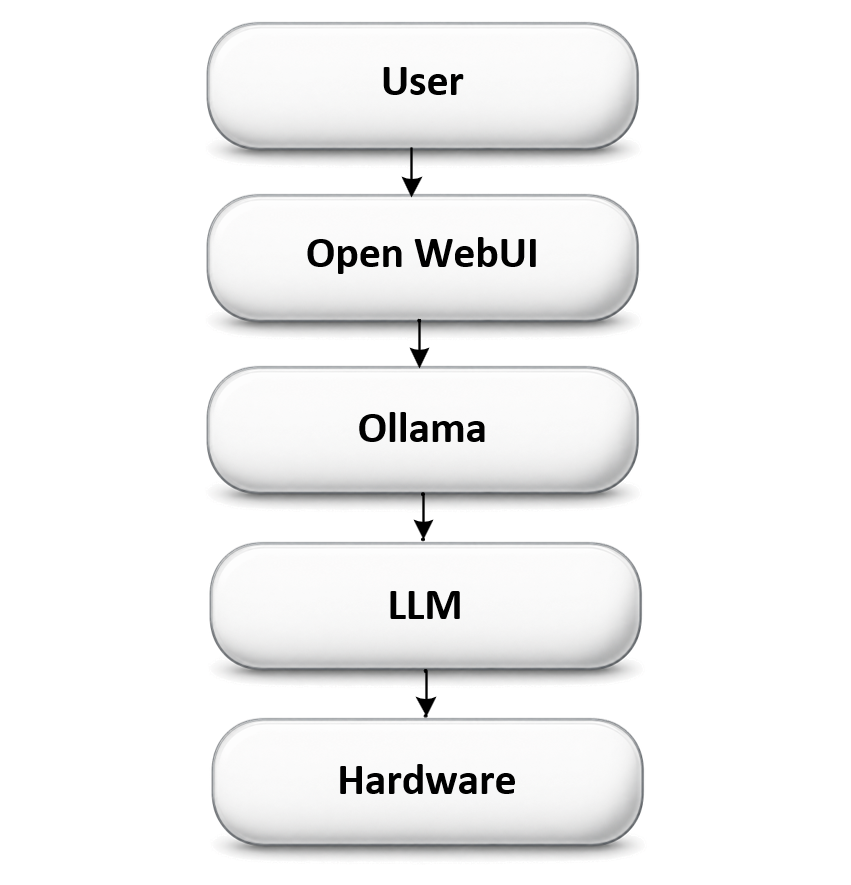

If the words "local LLM" mean nothing to you yet, you're in the right place. Here's the whole stack, boiled down to five layers:

That's you. You type a question or a request.
The chat window — a friendly browser page that looks a lot like any other AI chat app. It's the front end. It doesn't think; it just sends your message onward and displays the answer.
The model manager and server. Ollama downloads AI models to your machine, loads them into memory, and runs them when asked. Think of it like a DVD player and a shelf of movie disks — each disk is a different model, Ollama is the player that loads whichever disk you pick and plays it, and Open WebUI is the TV screen you watch it on.
The actual AI model — a big pile of numbers trained to predict text — doing the "thinking" and generating the response. Different models are good at different things (see the Field Guide for coder vs. conversational models).
The physical computer doing the math — CPU, GPU/NPU, RAM, and storage. Bigger, more capable hardware lets you run bigger, smarter models.
Ready for more? Head to the Local LLM Field Guide for a deeper, diagram-heavy walkthrough, or jump straight to the Build Journal to see this stack running for real.